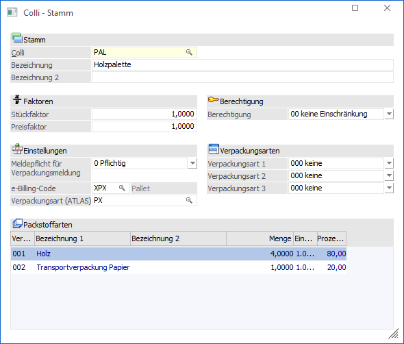
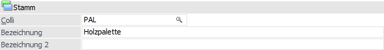
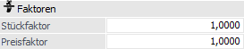
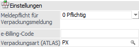
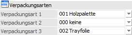
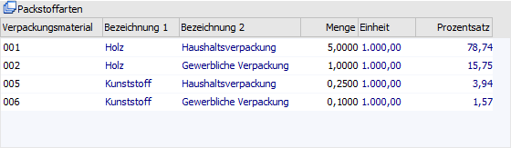
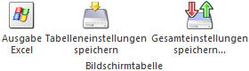
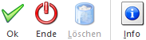

Im Colli-Stamm, welcher über den Menüpunkt…
1 WinLine FAKT
1 Stammdaten
1 Verpackung
1 Colli-Stamm
… geöffnet werden kann, erfolgt die Definition der einzelnen Verpackungseinheiten bzw. Maßeinheiten (z.B. Palette, Kiste, Flasche, Dutzend, etc.).

Stamm

Ø Colli
An dieser Stelle kann die (maximal 20stellige, alphanumerische) Colli-Nummer eintragen werden.
Hinweis
Dieser Nummer kann im Artikelstamm mit den entsprechenden Artikeln verknüpft werden.
Ø Bezeichnung / Bezeichnung 2
In diese Felder kann die Bezeichnung des Collis angegeben werden. Hierzu stehen jeweils 40 Zeichen zur Verfügung.
Faktoren

Mit Hilfe der Faktorfelder kann die Menge und / oder der Preis beeinflusst werden.
Achtung
Sobald der Colli im Artikelstamm zugeordnet wurde oder in Bewegungsdaten zum Einsatz kam (z.B. in Belegen), sind Änderungen an den Faktoren nicht mehr möglich!
Ø Stückfaktor
Eingabe des Umrechnungsfaktors (z.B. 12 für Dutzend, 0.01 für per Hundert, etc.) bzw. Angabe welche Menge eines Artikels in der Verpackungseinheit enthalten ist.
Beispiel
Ein Artikel soll immer in Kartons zu 6 Stk. verkauft werden:
ü Im Colli-Stamm wird hierzu ein neuer Colli, z.B. "KT6" angelegt und im Feld "Stück" 6 eingetragen. Der Preisfaktor wird in diesem Beispiel auf 2 gesetzt.
ü Im Artikelstamm wird als VK-Colli der Colli "KT6" hinterlegt; als allg. EK-Preis wird 100,- € und als allg. VK-Preis 1.000,- € eingetragen.
ü Für den Artikel wird ein Lieferantenzugang über 30 Stk. à 100,- € = 3.000,- € erfasst.
ü Im Artikeljournal wird der Lagerzugang der 30 Stk. ausgewiesen.
ü Im Artikelstamm (Register "Lager" - Unterregister "Lagerwerte") sieht man den Lagerzugang und Lagerstand von zu einem Wert von 3.000,- €.
Woher kommen nun diese 5 Stk. Zugang?
Die Lagerstände werden immer in der Verkaufs-Colli geführt. Das bedeutet, dass genau hier die Eingabe aus dem Feld "Stück" des Colli-Stamms relevant wird. Im VK-Colli im Feld "Stück" wurden die 6 Stk. eingetragen - d.h. dass in dieser Verpackungseinheit immer 6 Stk. enthalten sind. Nimmt man die 30 Stk. die eingekauft wurden und dividiert sie durch 6, ist das Ergebnis 5 - es sind also genau 5 Kartons "KT6" (oder 30 Stk.) am Lager.
Wird nun eine Ausgangsrechnung für diesen Artikel und einer Menge von 1 Stk. erfasst, so wird der Preis von 1.000,- € herangezogen und als "Summe" 2.000,- € angezeigt. Dies ist das Ergebnis dessen, dass im VK-Colli der Preisfaktor mit "2" angegeben wurde, d.h. 1.000,- € x 2 = 2.000,- €.
Im Artikelstamm (Register "Lager" - Unterregister "Lagerwerte") stehen nach Abschluss der Rechnung ein Lagerstand von 4 Kartons (oder 24 Stk.).
Ø Preisfaktor
Der Preisfaktor gibt an, in welcher Einheit der Preis geführt wird. Die Berechnung des Gesamtpreises in der Belegbearbeitung erfolgt nach dem folgenden Schema:
ü Gesamtpreis = Menge x Preisfaktor x Einzelpreis x Rabatt 1 x Rabatt 2
Hinweis
Der Stückfaktor (siehe Feld "Stück") hat für die Berechnung des Preises keine Relevanz.
Beispiel
Ein Artikel weist folgende Einstellungen auf:
ü VK-Einzelpreis lt. Artikelstamm: 3,28€
ü Preisfaktor lt. Colli: 5,5555
ü Erfasste Menge im Beleg: 150
ü Rabatt 1 im Beleg: 5%
ü Rabatt 2: im Beleg: 8%
Die Berechnung des Gesamtpreises (2388,91 €) wird wie folgt vorgenommen:
ü 150 x 5,5555 x 3,28 x 0,95 x 0,92
Berechtigung

Ø Berechtigung
Für jeden Colli-Stammsatz kann ein Berechtigungsprofil vergeben werden. Wenn der Benutzer einen Colli aufruft, wird geprüft, ob diesem eine Benutzergruppe zugeordnet wurde, welche in dem jeweiligen Profil enthalten ist und ob somit eine Bearbeitung erlaubt wäre (nähere Informationen entnehmen Sie bitte dem WinLine ADMIN - Handbuch).
Hinweis
Benutzern des Typs "Administrator" oder mit der Administratorenberechtigung "Benutzeradministrator" steht in der Auswahlbox der Punkt ">> Neues Profil" zur Verfügung. Über die Anwahl dieses Eintrags kann in der Folge ein neues Berechtigungsprofil angelegt werden.
Einstellungen

Ø Meldepflicht für Verpackungsmeldung
An dieser Stelle erfolgt die Festlegung, ob die Colli-Einheit verpackungsmeldungspflichtig ist oder nicht, d.h. ob die zugewiesenen Packstoffarten (siehe Tabelle "Packstoffarten") des Collis auf der Verpackungsmeldung ausgewiesen werden sollen.
Ø e-Billing-Code
E-Rechnungsformate wie "ZUGFeRD/Factur-X" oder "XRechnung" erwarten eine Kennung für die Verkaufs- oder Maßeinheit für den in Rechnung gestellten Artikel. Dafür muss ein entsprechender Code übermittelt werden, der den verwendeten Colli eindeutig identifiziert (z. B. "H87" für Stück).
Es steht ein Matchcode auf die Liste "Unit" aus dem Menüpunkt Stammdaten/Belegaustausch/E-Rechnung – Codelisten zur Verfügung. Darin sind alle Codes für Verpackungs- und Maßeinheiten enthalten, die verwendet werden können.
Ø Verpackungsart (ATLAS)
In diesem Feld (nur verfügbar in Mandanten mit Länderkennzeichen "Deutschland") kann ein Code - laut Codeliste C0017 des deutschen Zolls - angegeben werden (ein Matchcode mit den verfügbaren Codes steht zur Unterstützung zur Verfügung).
Diese Codes werden benötigt, da pro Position (Ware) ein Verpackungsstück in der ATLAS-Ausfuhranmeldung angegeben sein muss. Ist im Beleg kein Colli oder ein Colli ohne Verpackungsart vorhanden, so wird die Verpackungsart "NA" (= nicht verfügbar) in der XML-Datei verwendet.
Verpackungsarten

Ø Verpackungsart 1 / Verpackungsart 2 / Verpackungsart 3
Zur Erstellung einer Versandregel, welche in weiterer Folge für die Kommissionierung verwendet wird, können hier bis zu 3 Verpackungsarten angegeben werden. Im Belegkopftext, welcher die Option "Versandart" aktiviert hat und somit die Versandregel definiert, kann auf diese Felder zugegriffen bzw. verwiesen werden.
Tabelle "Packstoffarten"

In der Tabelle der Packstoffarten können die zum Colli gehörigen Packstoffarten aktiviert und mit einer Menge versehen werden. Hierdurch können folgende Informationen ausgewiesen werden:
ü In der Belegerfassung können die Kosten des Verpackungsmaterials ausgewiesen werden. Hierfür stehen folgende Variablen zur Verfügung:
ü 0/900 - 0/909 (Bezeichnung 1 der ersten 10 zugewiesenen Packstoffarten)
ü 0/910 - 0/919 (Lizenzgebühr pro Kilogramm der ersten 10 zugewiesenen Packstoffarten)
ü 0/920 - 0/929 (Gesamtlizenzgebühr der ersten 10 zugewiesenen Packstoffarten)
ü 0/930 - 0/939 (Gesamtgewicht in Kilogramm der ersten 10 zugewiesenen Packstoffarten)
ü Wenn die Einstellung "Meldepflicht für Verpackungsmeldung" mit der Option "0 - Pflichtig" versehen wurde, dann werden die Packstoffkosten (Lizenzgebühr) in der Verpackungsmeldung (WinLine FAKT - Auswertung - Verpackung - Verpackungsmeldung) ausgewiesen.
Hinweis zur Berechnung
Die Berechnung der Lizenzgebühr wird wie folgt durchgeführt:
ü 1. Gesamtgewicht
Menge der
Belegerfassung x Menge lt. Colli-Stamm
ü 2. Gesamtgewicht in
Kilogramm
(Gesamtgewicht / 1000) x Stück in Gramm lt.
Packstoffarten-Stamm
ü 3. Lizenzgebühr
Gesamtgewicht
in Kilogramm x Lizenzgebühr pro Kilogramm lt. Packstoffarten-Stamm
Ø Verpackungsmaterial
Mit Hilfe einer Auswahlbox kann an dieser Stelle das Verpackungsmaterial des Collis zugewiesen werden.
Hinweis
Die Anlage des Verpackungsmaterials erfolgt im Packstoffarten-Stamm (WinLine FAKT - Stammdaten - Verpackung - Packstoffarten).
Achtung
Gemäß österreichischer Verpackungsverordnung muss ab dem 01.01.2015 eine Aufsplittung nach Haushaltsverpackungen und gewerblichen Verpackungen erfolgen. Diese Unterteilung ist durch die Nutzung von separaten Packstoffarten zu realisieren.
Ø Bezeichnung 1 / Bezeichnung 2
In diesen Spalten wird die Bezeichnung 1 und 2 der ausgewählten Packstoffart angezeigt.
Ø Menge
An dieser Stelle erfolgt die Hinterlegung der benötigten Menge pro Colli (d.h. pro verkauften Artikeln). Die Gewichtseinheit ergibt sich aus der Spalte "Einheit".
Hinweis
Verpackungsmaterial mit Menge "0,0000" wird beim Speichern des Collis nicht berücksichtigt.
Ø Einheit
In der Spalte "Einheit" wird die Gewichtseinheit der ausgewählten Packstoffart in Gramm angezeigt.
Ø Prozentsatz
Hier wird das prozentuale Verhältnis der Packstoffarten untereinander ausgewiesen.
Tabellenbuttons

Ø Ausgabe Excel
Durch Anwahl des Buttons "Ausgabe Excel" wird der Inhalt der Tabelle an Microsoft Excel übergeben.
Ø Tabelleneinstellungen speichern
Die Spalten einer Tabelle können grundsätzlich an beliebige Positionen verschoben, bzw. in der Breite entsprechend angepasst werden. Durch Anwahl des Buttons "Tabelleneinstellungen speichern" werden die Einstellungen benutzerspezifisch gespeichert und bei dem nächsten Aufruf des Programmpunktes wieder vorgeschlagen.
Ø Gesamteinstellungen speichern
Im Gegensatz zu "Tabelleneinstellungen speichern" können mit "Gesamteinstellungen speichern" mehrere Tabellenaufbauten gespeichert und nach Wunsch geladen werden. Zusätzlich werden Sonderfunktionen der Tabelle (z.B. "Spalte gruppieren") ebenfalls bei der Speicherung bedacht.
Buttons

Ø Ok
Durch Anwahl des Buttons "Ok" bzw. der Taste F5 wird der Colli gespeichert.
Ø Ende
Bei Anwahl des Buttons "Ende" bzw. der Taste ESC wird das Fenster geschlossen und alle nicht gespeicherten Änderungen verworfen.
Ø Löschen
Mit Hilfe des Buttons "Löschen" können bestehende Collis, welche nicht verwendet werden, gelöscht werden. Hierfür wird beim Laden des Collis geprüft, ob dieser bei einem Artikel hinterlegt ist oder bereits in einem Beleg verwendet wird. Ist dies der Fall, so kann der Button nicht angewählt werden.
Hinweis
Wird der Button "Löschen" gedrückt, so wird zusätzlich geprüft, ob der Colli im Artikeljournal oder in einer der Belegarten verwendet wird. Ist dies der Fall, so kommt eine entsprechende Meldung und der Colli kann ebenfalls nicht gelöscht werden.
Ø Info
Durch Anwahl des Buttons "Info" wird eine Colli-Infoliste ausgegeben, auf welcher ersichtlich ist, bei welchen Datensätzen der Colli hinterlegt ist (Artikelstamm, Preislisteneinträge, Belege, Artikeljournal, usw.)
Hinweis
Es werden immer nur die ersten 10 Datensätze des jeweiligen Bereiches angezeigt, z.B. die ersten 10 Artikelstämme, in denen der Colli vorkommt. Durch einen Mausklick auf die jeweilige Überschrift, z.B. Artikelstamm, wird eine weitere Liste geöffnet, auf welcher dann alle Zeilen des Bereiches angezeigt werden.